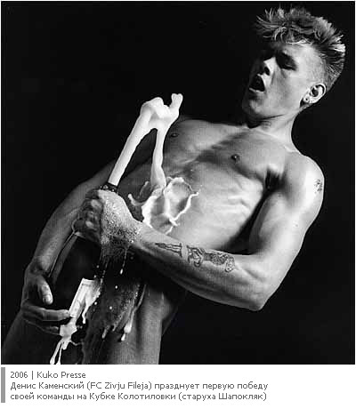

28 сентября 2006
Второй тур мы пропускали, но, тем не менее, я следил за ходом событий, укутавшись пледом и предателски кашляя перед каждой попыткой пригубить горячий чай. Большинство матчей получились упорными, но малорезультативными. Похоже, что трофей Громилы у Шопокляк котируется выше, нежели волшебная левая Нетто. Приятным исключением из списка прагматиков стала "Моча", которая пять раз направила свою струю аккурат в писсуары "любителей". Очень бы хотелось встретиться с исповедующими атакующий стиль "мочевиками" в плей-офф. Что касается нашей группы, то очевидно, что после победы Da Boyz борьба за первое место осложнится до предела. Хотя - это похуй. Наш следующий сопреник Smrad при удачном раскладе мог и победить. А теперь, этот удачный расклад светит "коричневым" лишь в утешительном финале.
Исходом встречи удивлен, как халявным пивом от президента "Кокашек". Впрочем, если бы тренер "Бендера" поставил в центр поля пару бромантановых крепышей, результат мог быть совсем иным. А так, все по делу. Из других матчей приятно удивила победа "Маршала", который в очередной раз дал просраться голимой оборонщине "Пфекаев". Не могу удержаться от того, чтобы воткнуть "Меч злорадства" в тушку лузера - "Трус не играет в хоккей, пора бы уже запомнить"!
Как говорится, результат нас не удивил, а игра порадовала. Против мощных зубров средней линии соперника наши 18-летние юнцы держались молодцом. Если бы не горячность Эдьки Кучмы, мы бы наверняка смогли вырвать очече, а так... А так ничего страшного не произошло, все идет по плану. Следующий тур мы пропускаем, и к матчу со "Спартаком" - сука, блядь, спартак - будем иметь возможность выбирать себе соперника. В общем не сцать, ибо шансы остаются.
Вот это матч! Вот это я понимаю кубок колотиловки! Если бы не Денис Каменский, который творил на поле "Денискины рассказы", то наши оппоненты могли бы и догнать нас в трофее Громилы. Чего стоит одна только последняя минута первого периода, когда половина газона кровью украсилась. Что касается результата — то я для профилактики трахну в моск обоих наших нападающих. Потому что это пиздец не забивать гол какой-то левой команде в течении всего матча и ждать пока вся защита на последней десятиминутке ринется в штрафную соперника. Но тем не менее датчанин принёс нам голь и три очка. Так же хочу выделить нашего финского голкипера Мику Тяхкявюри — парень не залечив до конца травму встал в створ и показал класс. Тут все вокруг говорят, что Zivju Fileja уже одной ногой в 1/4 турнира, благодаря победе в этом принципиальном матче. Ну тут хуй знает - я вполне ожидаю подьёбки со стороны какого-нибудь фаворита в последнем туре, который может пустить поиграть своих детей против «вонючек». Поэтому наши следующие два матча по любому пополнят очки Громиле и копилку наших голов на кубках колотиловки. Причём я вам отвечаю — вонючки тоже не лыком шиты и свою кость и очёчки в турнире они наверняка заработают. Вполне реальный расклад, что в говняном финале сенсационно окажется какой-нибудь бендер.
Так что бойтесь и сосите рыбий жир (взрослым - 4 капсулы, детям - одна).
ГОВНО!!! СУКА и ГОВНО!!! Блядь, сука и говно!!! Мне откровенно плевать на результат, о чём я неоднократно говорил ещё до начала турнира, но сивир инжури одного из главных объектов тренировочного процесса привела руководство к обширному инфаркту. Ну и второе разочарование дня - действия Тьяго Вейги. Когда я ему сказал отомстить за нашего дорогого Вольфганга, я надеялся на эффективность подката, а не эффектность, которая вылилась в красную карточку без вреда для ихтиандров. Тьфу ты. Даже ёбнуть толком не может, а ещё португалец... Теперь ясно откуда берутся Панкратьевас, Лекявичюс, Цхададзе и прочий тренерский файт клаб. А как еще решать ситуацию, если твои игроки не могут даже вдарить ломом по безнадёжью?!
Ну а Райш... хз, что теперь делать с этим австрийским мешком переломанных костей 19-летней выдержки. Теперь его, наверное, выгоднее будет продать как суповой набор. А-а-а-а... пшлвснх". (громко плачет)

Другие статьи по теме: